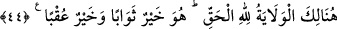

hak ettiği için Allah da ona yardım etmez. O inkârcı kendi gücüyle Allah’ın intikamını
kendisinden uzaklaştıramaz.
44. İşte burada yardım ve dostluk, Hak olan Allah’a mahsustur. Mükâfatı en iyi
olan O, en güzel âkıbeti veren yine O’dur.
“İşte burada” yâni bu makamda ve o halde, nimetin zevâl bulduğu vakitte “yardım ve
dostluk Hak olan Allah’a mahsustur.” O’ndan başka hiç kimse buna güç yetiremez. Bu
durumda bu ifâde önceki âyeti te’yid mâhiyetindedir. Ya da böyle durumlarda O,
kâfirlere karşı mü’min dostlarına yardım eder, mü’minlerin intikamını onlardan alır.
Nitekim O, bundan önceki âyetlerde de genişçe yer verilen kıssada kâfir olan kardeşe
karşı mü’min kardeşe yardım etmiş, onun tahminini gerçekleştirmiş ve düşmanını
yardımsız bırakmış ve perişan etmiştir. Âyetin devamındaki şu ifâde de bunu te’yid
etmektedir: “Mükâfâtı en iyi olan O,” yâni Allah Teâlâ’dır. Dostları için hazırladığı
“en güzel âkıbeti veren yine O’dur.”
Müftî Sa‘dî şöyle der: “Gâyet açıktır ki “ukbâ (en güzel âkıbet)” dünyevî âkıbete de
şâmildir.”
Celâleyn’de der ki: “Allah, karşılık verme bakımından karşılık (sevab) vermesi
umulan herkesten daha üstün, O’na itâatin sonucu da başkasına itâatin sonucundan daha
efdaldir.”
Bilesin ki anlatılan kıssa, şüphesiz pek çok ibretlerle doludur. Bunların en önemlisi
ise tevhîde sarılmanın ve dünya sevgisini terk etmenin iki cihanda kurtuluşa sebeb
olacağıdır. Şirk ve dünya sevgisi kişiyi, dünyada ve âhirette helâke götürür.
Vehb b. Münebbih’in şöyle dediği rivâyet olunur: “İsrailoğulları âlimlerinden birisi
ilim kitaplarından yetmiş sandık topladı. Her sandık yetmiş arşın boyundaydı. Allah
Teâlâ zamanın peygamberine ona şöyle demesini vahyetti: “Sende şu üç kötü huy
oldukça bunlardan kat kat fazlasını toplayıp ilmini arttırsan da sana bir fayda sağlamaz:
Dünya sevgisi, şeytanla dostluk ve müslümanlara eziyet etmek.” Nitekim Fir’avn da
Mûsâ (a.s.)’ın peygamber olduğunu biliyordu. Ancak kendisini kaptırdığı dünya sevgisi
ve riyâset tutkusu onu bildiğini uygulamaktan, hak peygambere tâbi olmaktan alıkoydu.
Sadece bilmenin ona bir faydası olmadı. Kezâ İblis de Âdem (a.s.)’ın gerçek durumunu
biliyordu. Yahudiler de Peygamberimiz (s.a.)’in durumunu biliyorlardı. Sadece
bilmeleri onları saâdete, kurtuluşa erdirmedi ve mutlu sonu bulamadılar. Kendilerine
edilen nasihatle amel etselerdi, kurtuluşa ererlerdi.
Mesnevî’de der ki:
Öğütçü, yüzlerce defa çalışıp çabalasa, gayret sarf etse de